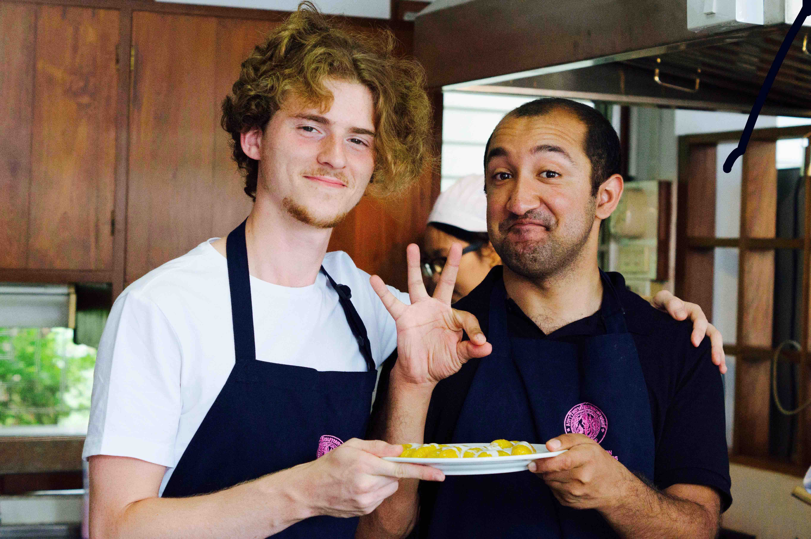
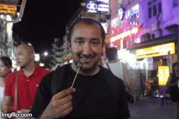

Thailand has a law called “Lese Majeste”. If you drop a coin and step on it, you could be arrested because you disrespected the king, whose image is on the coin.
Daily at fixed times, the national anthem is broadcasted on radio, during which times the entire nation freezes at a standstill. It was surreal to watch.
The Height Rule
People are very polite and everyone is really nice and friendly and chilled out
Cooking Classes (Tom Yum Soup, Banana and Sugar in Hot Water with Cream)

Lotus Lake
Paddy Fields
Thai Orientation Catwalk - entrance music for wrestlers

Soi Rombuttri Khao San Sex Tourism and Conservatism, Temples and Khao San side by side
Here are the people I met at Soi Rombuttri:
I also made a friend, Sarah Nehrling at a couchsurfing meet. We then went to Jim Thomson House and Internations.
Autorickshaw racket (Same as Kochi) e.g. Leicester winning the premier league, birthday of prince, silk export, honeymoon wish etc.
Trip Notes
Dates: 20 July 2016 - 3 August 2016
Flights: London-Dubai-Suvarnbhumi (Emirates). The flight time was about 13 hrs, excluding transit. The tickets cost about £850.
Dubai Crash Refund